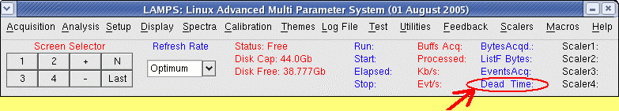
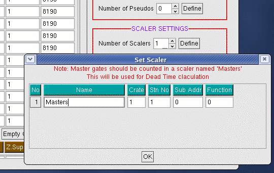

DEAD TIME
For online acquisition LAMPS can be setup to display the deadtime.
The deadtime will be displayed on the main window.

Two numbers will be displayed, example:
Dead Time: 10.5% (11.2%)
The first number 10.5% is the overall dead time from the begining of the run to the
present time. (The final overall dead time will be written to the log file). The second
figure in brackets (11.2%) is the diferential dead time, that is the dead time for
the current buffer. When setting up detectors, adjusting the beam current etc., this
is the figure to watch.
Setting up for Dead Time Display
There should be a CAMAC scaler in the crate. One of the inputs to the scaler should
be the master gate itself (suitably shaped as TTL or NIM). In the setup this scaler
should be given the name "Masters" as shown below.

After that when LAMPS is run, the dead time calculations will automatically be displayed.